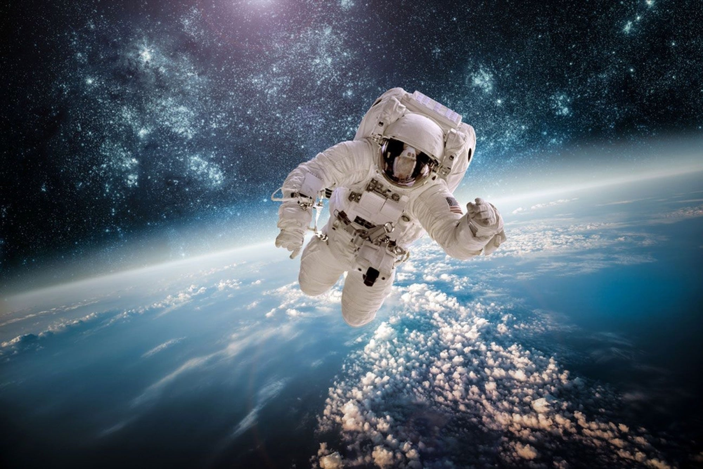
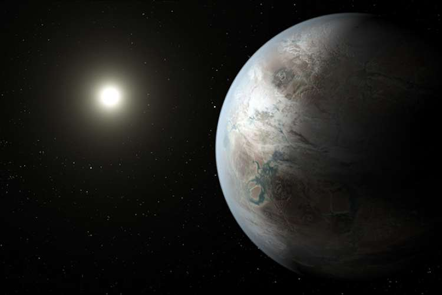

Our Gallery
Our Best
Photos!
This stunning photograph is a true work of art. Against a backdrop of a fiery sunset sky, a plane soars gracefully through the air, leaving a trail of white behind it. The image captures the magic of flight and the beauty of the natural world, making it the perfect addition to any aviation enthusiast's collection. The warm hues of the sunset give the photograph a sense of serenity and tranquility, while the bold lines of the plane add a dynamic energy to the scene. The photograph is a testament to the incredible achievements of the aviation industry, and a reminder of the beauty and power of the natural world.

This breathtaking photograph is a testament to the incredible beauty and majesty of our planet. Against a backdrop of infinite blackness, a lone astronaut floats weightlessly, gazing down upon the Earth as it hangs in the void of space. The photograph captures the fragility and beauty of our planet, and the importance of preserving it for future generations. The image is a reminder of the incredible achievement of the space program, and the courage and determination of the human spirit. It is a symbol of our unending quest for knowledge and exploration. It is incredible what space reveals about nature.
 This iconic image is a testament to the incredible achievements of the space program, and the courage and determination of the human spirit. Against a barren lunar landscape, an astronaut stands, gazing out into the infinite expanse of space. The photograph captures the sense of awe and wonder that must have been felt by those who first set foot on the moon. The image is a symbol of our unending quest for knowledge and exploration, and a reminder of the incredible potential of human ingenuity and determination. This iconic photograph is sure to capture the imagination and inspire awe in all.
This iconic image is a testament to the incredible achievements of the space program, and the courage and determination of the human spirit. Against a barren lunar landscape, an astronaut stands, gazing out into the infinite expanse of space. The photograph captures the sense of awe and wonder that must have been felt by those who first set foot on the moon. The image is a symbol of our unending quest for knowledge and exploration, and a reminder of the incredible potential of human ingenuity and determination. This iconic photograph is sure to capture the imagination and inspire awe in all.

This mesmerizing photograph captures the beauty and complexity of our solar system. Against a backdrop of infinite blackness, a vibrant blue and green planet is illuminated by the brilliant light of the sun. The photograph is a reminder of the incredible vastness and complexity of the universe, and the wonder and awe it inspires in all of us. The image is a symbol of the incredible achievements of science and technology, and a testament to the power of human ingenuity and curiosity. Whether displayed in a home, office, or gallery, this stunning photograph is sure to capture the imagination and inspire awe in all who see it.